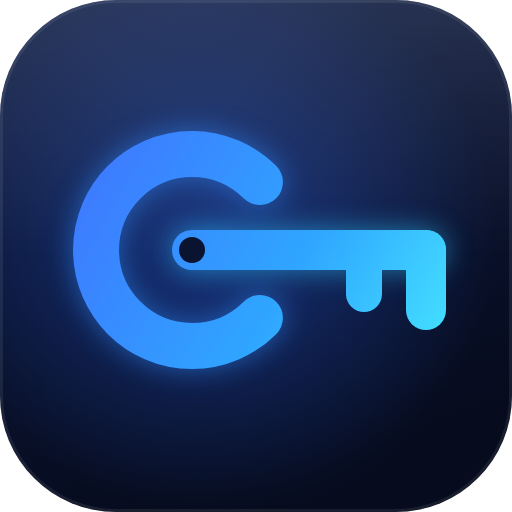

Your key stays yours
Only you know your password. Clavis never sends it anywhere, and nobody — including us — can open your files without your password or recovery key.

Clavis exists for one reason: the private files on your computer should stay private — without accounts, subscriptions or trusting someone else's server.
Most of us keep things on our computers we'd never want seen — scans of passports, tax returns, contracts, family photos, private notes. Protecting them properly has usually meant cloud services that hold your keys, or tools built for experts.
Clavis takes the other road. It runs entirely on your Windows PC. You choose a password, Clavis turns it into a key, and your files are locked with the same strong encryption used to protect sensitive data around the world. Nothing is uploaded, and there's no account to create.
It's built to feel calm: drag a file in, press Encrypt, done. The serious engineering stays underneath, where it belongs.
Only you know your password. Clavis never sends it anywhere, and nobody — including us — can open your files without your password or recovery key.
Everything happens on your computer. It works offline, and it only goes online to check for updates.
We say what Clavis does and doesn't do. When something is only best effort — like wiping originals on SSDs — the app tells you so.
Every file is checked as it's decrypted, updates install themselves, and a recovery key is there if you ever forget your password.
Made by Kapil Palanivel. Download Clavis and keep your key.